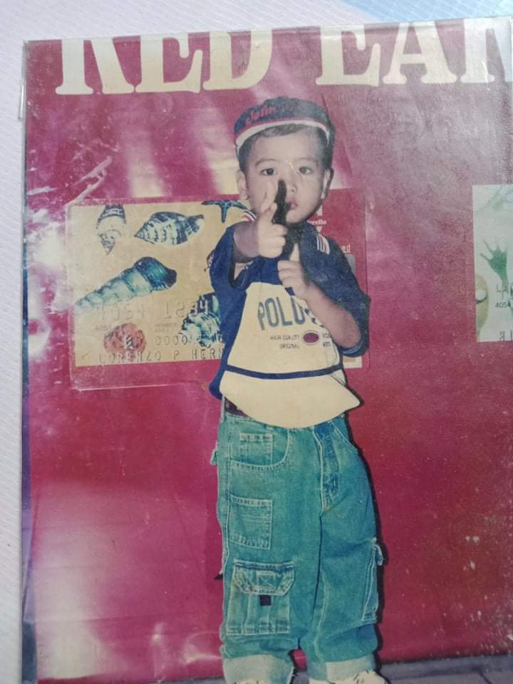
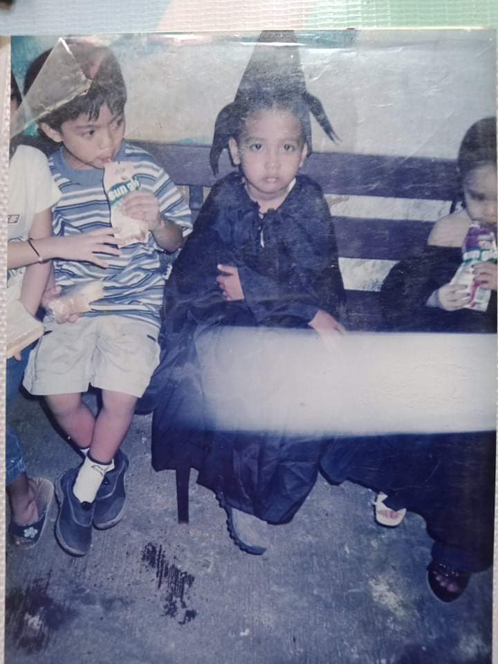
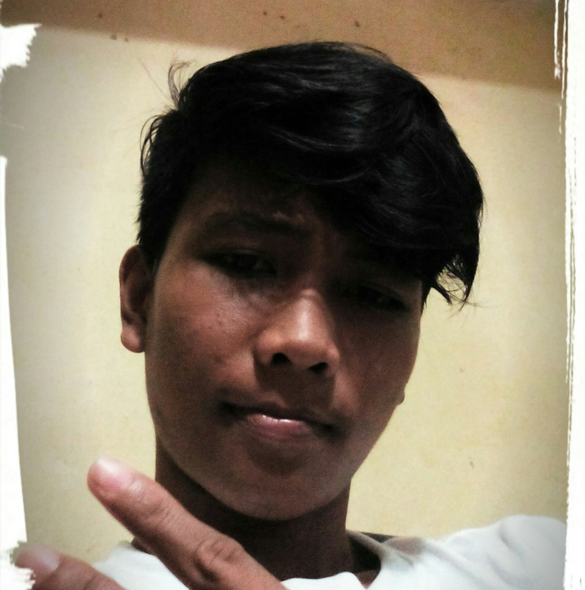
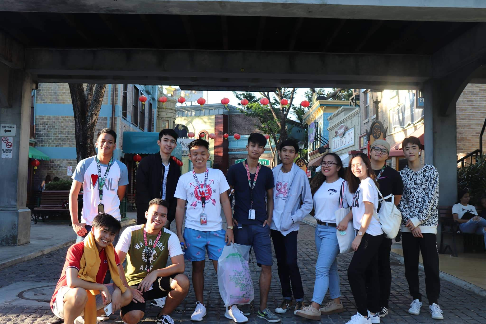
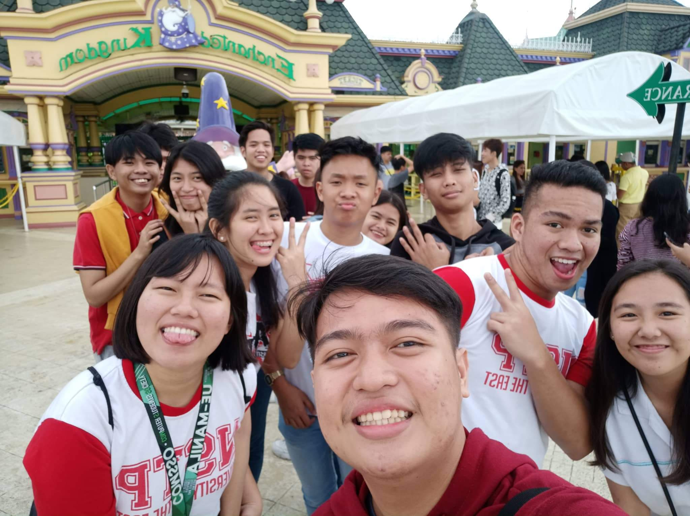

About Me
About Me
My Childhood Years
 Childhood is one of the best part of our lives, as we think only happiness and enjoynment.1 Yes, as I remember, my childhood years was full of happiness and joy.2 It was the time that all I think and do is to play until I get sleepy.3 As I grow up in our father's province, I have so many cousins at my age to play.4 In that time, mobile phones are not that used, so what we play are traditional games like tumbang lata, jolen, sticker, goma and etc.5 I think those were one of the best moments my life.6 Then I also remember my kinder and elementary days.7 I remember that in my 1st grade in elementary, I transferred 3 times from Manila to Pangasinan, then to Mindanao.8
I think the language was the hardest part on those times, as it was hard to adapt.9 In my childhood also where I remember that I always got an earful from my parents, especially my father.10 Because he is an athlete, discipline is one of the most important in our family.11
I remember that I always have to wake up early in the morning to do house chores, like get water from the water pump in our local area, and I hated it so much.12 I also remember how I get discipline from my father, he doesn't usually get physical, but when he does then pain will come.13
In my mother side, I remember she doesn't discipline me physically but verbally, especially when I got home full of dirt because of playing.14 But what I will not forget is her pinch in my ears, and that is one of the most painful experience that I've had.15  I also has a younger sister to take care of, I remember that I'm the one in charge of watching her when she's sleeping and my mother is doing her household chores.16 I also remember my childhood friends, especially my classmate name Jhon Lee as my parents almost think that we are like real brothers because of how close we are as a friend.17 Overall, I think my chidlhood years are those years that I dont think about consequences, free from judgements and expectations from others.18 My childhood is those times that gave me memories that I will cherish forever in my life.19 But I remember that in the later part of my childhood years is where my parents starts to drift apart from each other.20 And that part will affect me greatly as my years continues.21
My Teenage Years
 Teenage years as they say is
a crucial stage in human life that needs utmost parental care, guidance, and empathy.1 It is those years that defines the character of an individual.2 But my teenage years are rough for me, as it was the start of hardships.3 My family was broken, we sturggle financially and more.4 It was those times that leads me to wrong paths, like drinking, smoking and etc.5 And it affect me so much in terms of decision making, education and how I treat others.6Because there is almost no one to guide me, as my father start to work far away, and my mother and sister left us.7 But despite everything that happened, there is one person that help me to get back at the right path and that is my Aunt.8 She stop me from my bad habits, scolded me if I'm doing wrong and many more.9 And most importantly, she gave me shelter physically and emotionally.10 Yes, I owe her a lot, without her I think I'm not in my position right now as a student.11 Without her, I think I'm not where I am supposed to be right now..12
As I live with my Aunt, the first thing that I learned from her is to give respect back to others.13 She also encourage me to pursue education back again.14 And because of that, I get back to school because I stop for 2 years in high school.15 Yes, I admit that after I get back to school again, my bad habits didn't easily go away.16 I always skip classes, always go out on night with my school friends and etc.17 But despite that, I manage to graduate my highschool years.18 After I graduated my highschool, my father told me to go to Manila where he works, and I accepted.19 And as I go to Manila, then also my College life starts.20
My College Years
 My College Years, is where I start to learn reality.1 Expectations, pressures, financial problems and many more starts to crumble me again.2 My first hard decision coming to college is I think picking my course.3 Because I'm not a good student in my highschool days, I didn't think about my future profession tha hard.4 But what led me choosing Bachelor of Science in Information Technology (BSIT) is I think because I love interacting with computers so much, especially computer games.5 But the funny part is that BSIT doesn't have that much relation in the gaming part.6  As a lower class family, education is not easy, especially in a University.7 But I choose to study at the University of the East (UE) because my only cousin that is in Manila is studying in UE.8 At my first day in college, I struggle to adjust with my environment because I came from a province, no friend to talk to at first and also I am socially awkward to others.9 But after a few more days, I start to interact with my new classmates and acquire some friends.10 Then after conquering my social awkwardness then comes programming, because I didn't experience the new curriculum that is Senior Highschool, I have basically no knowledge about programming.11
When our professor show me this code -
print"Hello World!", all of my classmates knew it except me that has no idea and its funny to think about it right now.12 My 1st year 1st semester was a mess, I barely passed my subject and realize the gap between me and my course.13 Then comes 2nd semester, because of the pressure of being just barely passed in my previous semester and our financial capabilities starts to get rough.14I study so hard that I almost get sick of the voices of arabs that teaches programming in Youtube.15 And because of that, after our 2nd semester I manage to get University Scholarship (US) in my university by getting a General Weighted Average (GWA) of 1.34.16 After I got the scholarship, my father is so happy and I'm also happy about it, as it ease our financial situation on that time.17
Then start my 2nd year 1st semester, coming to that semester comes expectation that I will again achieve scholarship, but it hits me back so hard.18 Because of the expectation, I got pressured, and at our finals week on that semester, I got sick and hospitalized for almost 2 weeks and cannot attend my classes on those days.19 It affect my exams because I feel sick even after I got discharged, then because of that my grades drop, and eventually didn't get the scholarship again.20 Because of that I stopped for 1 year, and after that, right now, I got back to school again strong and full of determination, and hope that I can do my best, so that I can get great results after this semester.21